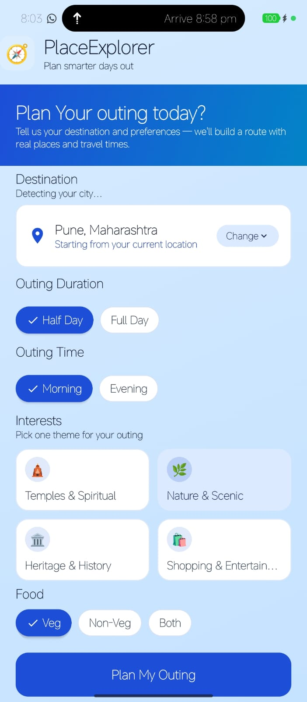
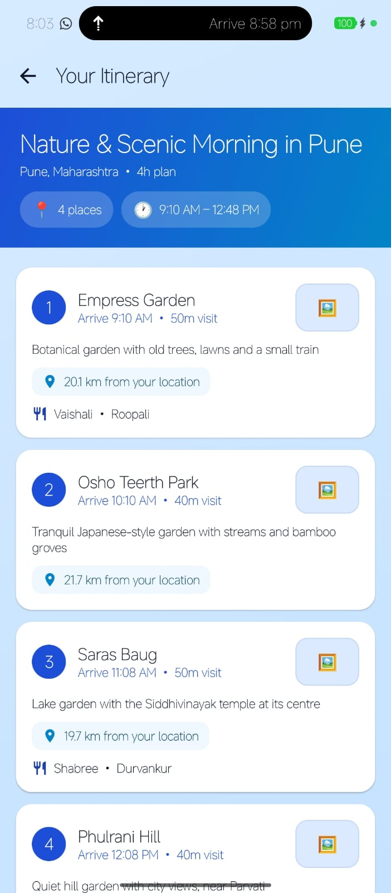
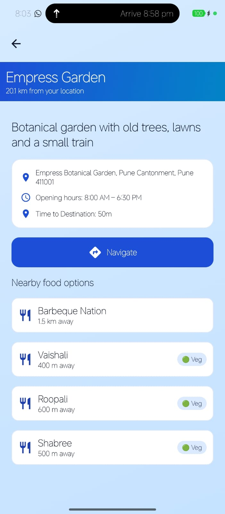

🧭
Guided outing planning
Set your destination, half-day or full-day duration, morning or evening, interests and food preference.
PlaceExplorer is an AI-powered outing planner that turns a destination and a few preferences into a practical, route-aware half-day or full-day itinerary.



Choose what matters for the outing and get an itinerary designed around places, timing and travel.
Set your destination, half-day or full-day duration, morning or evening, interests and food preference.
See ordered stops, suggested arrival times, visit durations and road-based travel legs.
Discover places using OpenStreetMap data, destination search and current-location support.
Explore destination information, nearby food options and other notable places around a stop.
Interest-specific filtering, including temple-focused results for the Temples & Spiritual category.
Gemini function calling, MCP tools and retrieval-augmented context support the planning experience.
Actual Android application screenshots from the project.
A Kotlin Android client communicates with a Python backend. The backend exposes planning and agent endpoints and shares a tool layer for place discovery and routing.
The Android data/repository layer calls the backend. The backend supports a deterministic planning pipeline and an agent chat pipeline; both can use shared MCP tools for place search, place details, routes and route matrices. External geographic data and routing are provided by OpenStreetMap services and OSRM.
Native Android experience backed by an AI-enabled Python service.